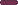
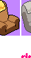

neu
a small corner of the internet
about
I'm Neu. I build things for the web, mostly small, mostly for the pleasure of it.
This page is one of them — no framework, no build step, one piece of glass.
Drag the glass. It doesn't do anything. That's rather the point.
work
Nothing here yet.

